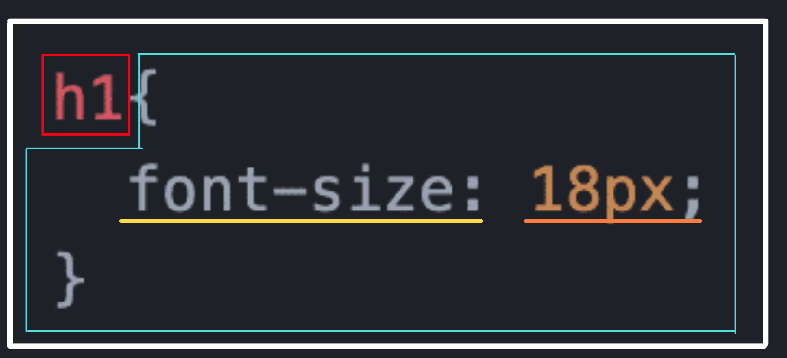

さぁ、CSSの番です！HTMLよりCSSの方が文法はずっとシンプルな気がするので頑張りましょう！
さて、CSSの中身はだいたいこんな感じです。この枠や線の色ごとに説明していきますね。
・セレクタ・
赤枠で囲んだ箇所、どこかで見たことありませんか？
そうです、HTMLの要素の名前です！この部分のことをセレクタと言ってCSSを反映させたい範囲をここで指定できます。
今回の場合は、HTMLにあるh1要素全てを選択するタイプセレクタというセレクタを使用しています。
セレクタにも色々種類があるので、うまく使い分けられるようになれば効率的且効果的にデザインできますよ！
・宣言ブロック・
青枠で囲まれた部分のことを宣言ブロックといいます。ここでは要素に追加したい値などを必要なだけ追加することができ、 必ず中括弧（{}）で囲みます。
・プロパティと値・
宣言ブロックの中の黄色とオレンジの下線が引いてある箇所に注目です！
この２箇所は一心同体、主語述語の関係です！黄色の部分で「何が」、オレンジの部分で「どうする」を指定しています。
例えば上で示した画像の場合は、font-sizeが18px、つまりフォントのサイズを18pxにする、という指示を出しています。
この黄色の部分をプロパティ、オレンジの部分を値と呼びます。
プロパティの直後にコロン、値の直後にセミコロンを書くことを忘れないでくださいね！
・ルール・
最後に、全体を白く囲んだ部分についてです。
セレクタと宣言ブロックをまとめてルールと呼びます。
このルールという言葉は開発する上でほとんど使われることはないと思うので、覚える必要もないかなと思いますが、CSSはこのルールを複数作成することで成り立っています！
プロパティはある程度決まったものがあるので、CSSは慣れてしまえばとても簡単だと思います！
どんどん練習して、理想のデザインが作れるように、一緒に頑張りましょう！